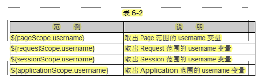

华师day04_am
一、Get请求与Post请求：
Get请求：
①. 在浏览器地址栏中输入某个URL地址或单击网页上的一个超链接时，浏览器发出的HTTP请求消息的请求方式为GET。
②. 如果网页中的<form>表单元素的 method 属性被设置为了“GET”，浏览器提交这个FORM表单时生成的HTTP请求消息的请求方式也为GET。
④. 使用GET方式传送的数据量一般限制在 1KB 以下。
Post请求：
①. POST 请求方式主要用于向 WEB 服务器端程序提交 FORM 表单中的数据: form 表单的 method 置为 POST
②. POST 方式将各个表单字段元素及其数据作为 HTTP 消息的实体内容发送给 WEB 服务器，传送的数据量要比使用GET方式传送的数据量大得多。
二、jsp的九大隐式对象：
JSP 页面的隐含变量: 没有声明就可以使用的对象. JSP页面一共有 9 个隐含对象.（查看jsp生成的java类，_jspService方法中 可以看到对应隐式对象的声明）
使用 <% %> 编写的代码在此位置. 可以用到 request, response, pageContext, session ，application, config, out, page 这 8 个隐含对象. (实际上还可以使用一个叫 exception 的隐含对象)
①. request: HttpServletRequest 的一个对象. *
②. response: HttpServletResponse 的一个对象(在 JSP 页面中几乎不会调用 response 的任何方法.)
③. pageContext: 页面的上下文, 是 PageContext 的一个对象. 可以从该对象中获取到其他 8 个隐含对象. 也可以从中获取到当前页面的其他信息. (学习自定义标签时使用它) *
④. session: 代表浏览器和服务器的一次会话, 是 HttpSession 的一个对象. 后面详细学习. *
⑤. application: 代表当前 WEB 应用. 是 ServletContext 对象. * 可以获取初始化参数。
⑥. config: 当前 JSP 对应的 Servlet 的 ServletConfig 对象(几乎不使用). 若需要访问当前 JSP 配置的初始化参数 , 需要通过映射的地址才可以.
⑦. out: JspWriter 对象. 调用 out.println() 可以直接把字符串打印到浏览器上. *
⑧. page: 指向当前 JSP 对应的 Servlet 对象的引用, 但为 Object 类型, 只能调用 Object 类的方法(几乎不使用)
⑨. exception: 在声明了 page 指令的 isErrorPage="true" 时, 才可以使用.
三、四个作用域
在application、session、request、pageContext对象中都可以调用setAttribute方法和getAttribute方法来设置和检索各自域范围内的属性。
页面：pageContext 仅在当前页面有效
请求对象：request 在一个请求内有效 （包含转发）
会话 ：session 在一个会话内有效 （一个浏览器 与 服务器）
应用程序：application 在整个程序内都有效
能小则小
四、指令：
1、：page指令
a . page指令用于定义JSP页面的各种属性, 无论page指令出现在JSP页面中的什么地方,它作用的都是整个JSP页面, 为了保持程序的可读性和遵循良好的编程习惯, page指令最好是放在整个JSP页面的起始位置。
b. page 指令常用的属性:
①. import 属性: 指定当前 JSP 页面对应的 Servlet 需要导入的类.
<%@page import="java.text.DateFormat"%>
②. session 属性: 取值为 true 或 false, 指定当前页面的 session 隐藏变量是否可用, 也可以说访问当前页面时是否一定要生成 HttpSession对象.
<%@ page session="false" %>
③. errorPage 和 isErrorPage:
> errorPage 指定若当前页面出现错误的实际响应页面时什么. 其中 / 表示的是当前 WEB 应用的根目录.
<%@ page errorPage="/error.jsp" %>
> 在响应 error.jsp 时, JSP 引擎使用的请求转发的方式.
> isErrorPage 指定当前页面是否为错误处理页面, 可以说明当前页面是否可以使用 exception 隐藏变量. 需要注意的是: 若指定
isErrorPage="true", 并使用 exception 的方法了, 一般不建议能够直接访问该页面。
五、会话控制
概念
1、Cookie
Cookie机制采用的是在客户端保持Http状态信息的方案。
Cookie实在浏览器访问Web服务器的某个资源时，由Web服务器在Http响应消息头中附带传送给浏览器的一个小文本文件。
一旦Web浏览器保存了某个Cookie，那么它在以后每次访问该Web服务器时，都会在Http请求头中将这个Cookie回传给Web服务器。
底层实现原理：
Web服务器通过在Http响应消息中增加Set-Cookie响应头字段将Cookie信息发送给浏览器，浏览器通过在Http请求消息中增加Cookie请求头字段将Cookie回传给Web服务器。
一个Cookie只能标识一种信息，它至少含有一个标识信息的名称（name）和设置值（Value）
一个Web站点可以给一个Web浏览器发送多个Cookie，一个Web浏览器也可以存储多个Web站点提供的Cookie。
浏览器一般只允许存放300个Cookie，每个站点最多存放20个Cookie，每个Cookie的大小限制为4KB。
2、在Servlet程序中使用Cookie
①：Servlet API中提供了一个javax.servlet.http.Cookie类来封装Cookie信息，它包含有生成Cookie信息和提取Cookie信息的各个属性的方法。
②：HttpServletResponse接口中定义了一个addCookie方法，它用于在发送给浏览器的HTTP响应消息中增加一个Set-Cookie响应头字段。
③：HttpServletRequest接口中定义了一个getCookies方法，它用于从HTTP请求消息的Cookie请求头字段中读取所有的Cookie项。
3、Cookie类的方法：
2、 Session：
//创建或获取Session对象
HttpSession session = request.getSession();
//获取Session对象的id
String id = session.getId();
System.out.println(id);
//向Session对象中放一个用户
session.setAttribute("user", "admin");
六、el表达式：
1.为什么要使用EL
2.EL简介

如：从session中读取 uname 可以 ${uname} 也可以指定范围：${sessionScope.uname}